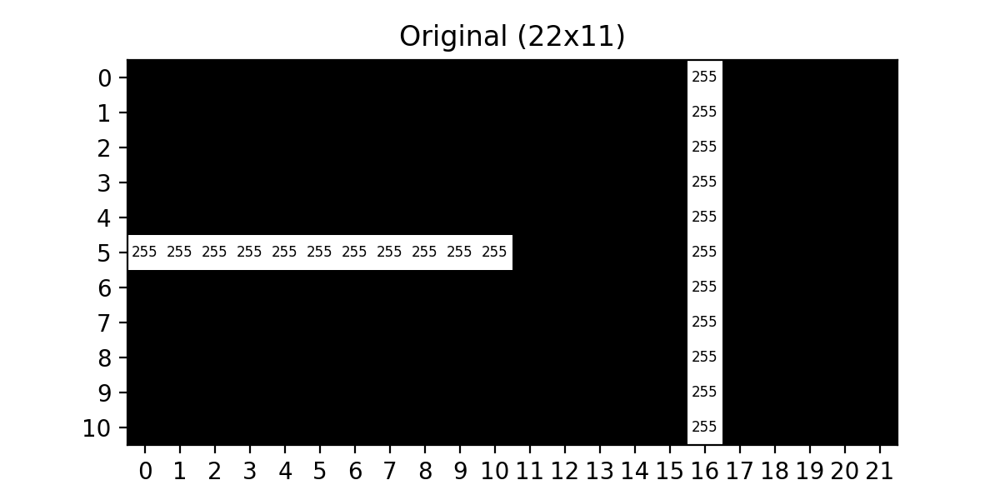
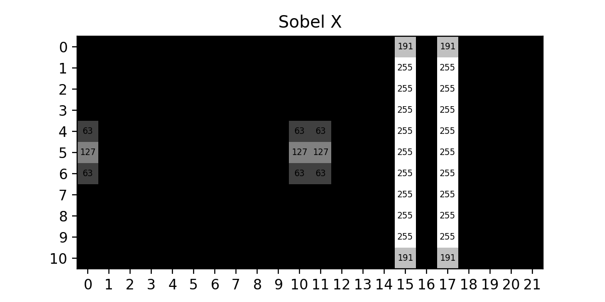
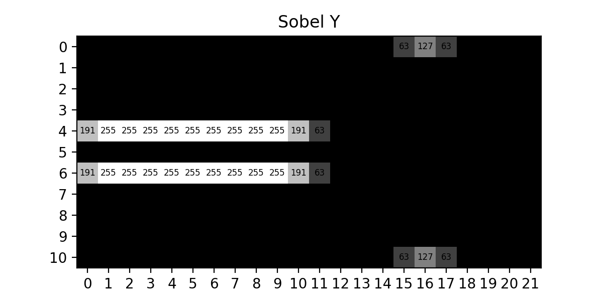
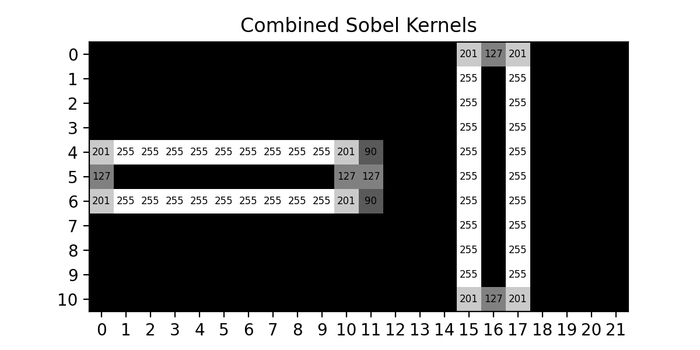
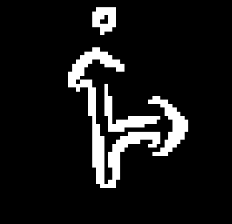

Jul 04, 2026 | 1077 words | 11 min read
6.2.1. Task 1#
Learning Objectives#
Implement a Sobel Filter from scratch
Understand how thresholding is used in Sobel filtering
Introduction#
In the previous task, you applied a Gaussian filter to smooth an image and reduce noise. In this task, you will build a Sobel filter that uses the smoothed image to detect and highlight edges.
How do we find the edges in an image?#
Now that we have blurred the images using the Gaussian filter from Section 5.2.3 we will be constructing a Sobel filter to highlight the edges within the blurred image.
The Sobel filter works by passing the image through 2 different Sobel kernels (one for the \(x\) direction and one for the \(y\) direction). These kernels work in the same way that the Gaussian kernel worked in the previous task, but the values are chosen in such a way as to calculate what is called the gradient in the respective direction.
You can think of the gradient as the measure of slope in the pixel values in a given direction. To illustrate how these kernels actually behave on an image let’s start with a horizontal and vertical line demonstration :

Fig. 6.1 Original 22x11 Horizontal / Vertical#
We will now apply the \(\text{Sobel}_x\) kernel to show the gradient in the \(x\) direction:

Fig. 6.2 Sobel X Kernel#
Since this filter should only highlight the areas where the pixels change from left to right it makes sense that the horizontal line essentially disappears (except for where it starts and stops) while the edges of the original vertical line are emphasized.
Applying the \(\text{Sobel}_y\) kernel to the original image, we should see the areas where pixels change from top to bottom:

Fig. 6.3 Sobel Y Kernel#
As we can see, each of the kernels are able to highlight the changes in their respective directions, so in order to find all the edges in an image we simply need to combine these results, which gives us :

Fig. 6.4 Combined Sobel Kernels#
Note
This is ONLY the output of combining the two Sobel kernels’ outputs. A Sobel filter would still have the final step of pixel thresholding so that all pixels would be either white or black indicating whether that pixel IS or IS NOT an edge.
How do we construct the Sobel filter?#
The Sobel filter starts with the two directional kernels, \(\text{Sobel}_x\) and \(\text{Sobel}_y\), which are defined as follows:
We will apply each of these kernels to the original image to get two images, one that has been processed with the \(\text{Sobel}_x\) kernel (known as the x-gradient image) and one that has been processed with the \(\text{Sobel}_y\) kernel (known as the y-gradient image). This process is the same as the one used for the Gaussian kernel, but the negative values in these kernels require that both the image and kernel arrays use floating-point arithmetic.
Combining the gradient images#
To combine these two images, we will go pixel by pixel and compute the gradient magnitude which we will set as the pixel value in the combined image:
Where :
\(gx\) is the pixel value in the x-gradient image.
\(gy\) is the pixel value in the y-gradient image.
\(\text{gradient_magnitude}\) is the corresponding pixel’s value in the combined image.
Note
This formula CAN result in a \(\text{gradient_magnitude}\) that exceeds \(255\), which is not allowed for a grayscale image. You will need to ensure that values above \(255\) are clipped down to \(255\).
Thresholding#
The last step of this filter is to set a pixel threshold. The combined output of the Sobel kernels will likely result in some pixels having a value that is not strictly black or white, this means that the pixel is somewhat of an edge pixel. To fix this, we set a threshold which will tell us the minimum value a pixel must have to be considered an edge.
Iterating through each pixel of the combined Sobel kernel image we apply the following logic:
Thresholding can have a major impact on the output image from the Sobel filter, and a poorly chosen value can completely disrupt the whole point of the filter in the first place. To showcase this lets look at the following outputs :
WITHOUT Thresholding :
Fig. 6.5 Sobel Filter Without Thresholding#
Threshold value set to \(15\):
Fig. 6.6 Sobel Filter Low Thresholding#
Threshold value set to \(240\):

Fig. 6.7 Sobel Filter High Thresholding#
Threshold value set to \(50\):
Fig. 6.8 Sobel Filter Good Thresholding#
As we can see, low thresholding results in far too many pixels being classified as edges, high thresholding results in not enough pixels being classified as edges, and in both cases we lose most of the details that were present in the original image.
For the images that we will be trying to process, the traffic signs, the threshold value we found to be a good balance of edge detail across the board was \(50\) for this dataset.
Note
Threshold values are entirely dependent on the images that you are processing, so it is always best to find a value that best represents YOUR data set whenever using the Sobel Filter.
Task Instructions#
Deliverable Reminder
Create a flowchart of your algorithm and save it as
tp2_team_1_teamnumber.pdf. Start your
program from a copy of the
ENGR133_Python_Template.py
template and name it
tp2_team_1_teamnumber.py.
Write a function named sobel_filter that takes in a blurred grayscale image
(produced by gaussian_filter from Section 5.2.3) and returns a
uint8 NumPy array of the Sobel-filtered image. The function should:
Initialize the \(\text{Sobel}_x\) and \(\text{Sobel}_y\) kernels.
Convert the image and kernel arrays to
floattype to handle the negative kernel values:data_array = np.array(data, dtype=float)
Pad the image with zeros (as in Section 5.2.3), then compute the x-gradient and y-gradient images by applying the respective Sobel kernels.
Combine the gradient images using the gradient magnitude formula ((6.2)). Clip any values above \(255\) down to \(255\).
Apply a threshold of \(50\) to each pixel in the combined image ((6.3)).
Organize your code to use functions that break up the task into manageable pieces.
Main Function#
Note
You will need the load_img and rgb_to_grayscale functions developed
in Section 15.2.2 and the gaussian_filter function developed in
Section 5.2.3. Copy them into your program.
In your main function, you will need to do the following:
Ask the user for an image filename (for example,
ref_col_a.png).Load the image using
load_img.Convert the image to grayscale using
rgb_to_grayscale.Apply
gaussian_filterwith \(\sigma = 1\).Apply
sobel_filterto the blurred grayscale image.Display and save the edge-detected image.
Use the files provided in Table 6.3 to test your code.
Image File Name |
Description |
|---|---|
A color image |
|
A color image |
{kind=link}
{kind=link}
Sample Output#
Use the values in Table 6.4 below to test your program.
Case |
image_path |
|---|---|
1 |
ref_col_a.png |
2 |
ref_col_b.png |
Ensure your program’s output matches the provided samples exactly. This includes all characters, white space, and punctuation. In the samples, user input is highlighted like this for clarity, but your program should not highlight user input in this way.
Case 1 Sample Output
$ python3 tp2_team_1_teamnumber.py Enter the path to the image file: ref_col_a.png
Fig. 6.9 Case_1_ref_col_a_edge.png#
Case 2 Sample Output
$ python3 tp2_team_1_teamnumber.py Enter the path to the image file: ref_col_b.png
Fig. 6.10 Case_2_ref_col_b_edge.png#
Deliverables |
Description |
|---|---|
tp2_team_1_teamnumber.pdf |
Flowchart(s) for this task. |
tp2_team_1_teamnumber.py |
Your completed Python code. |